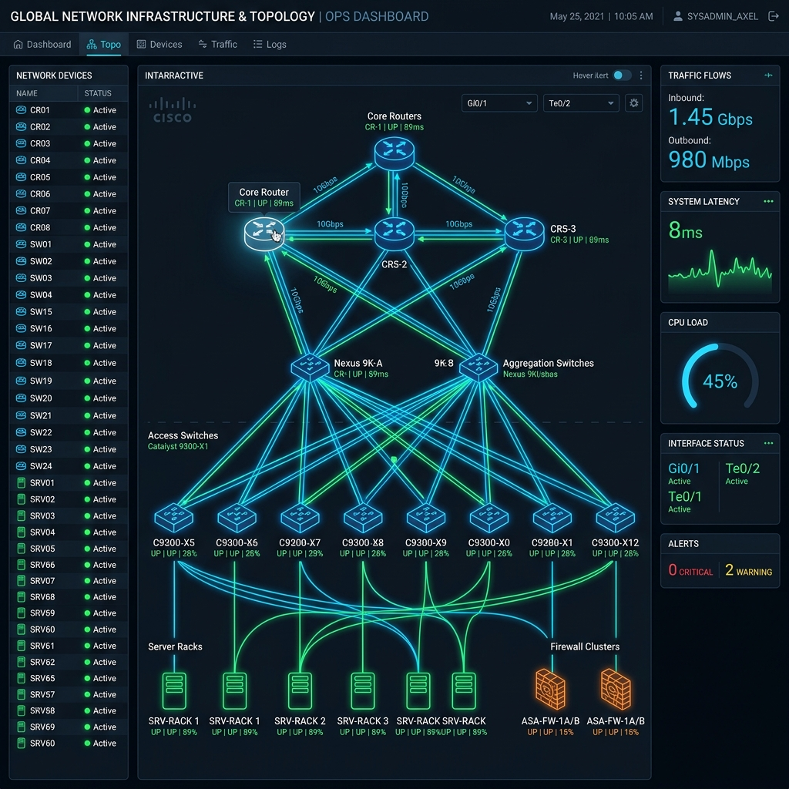
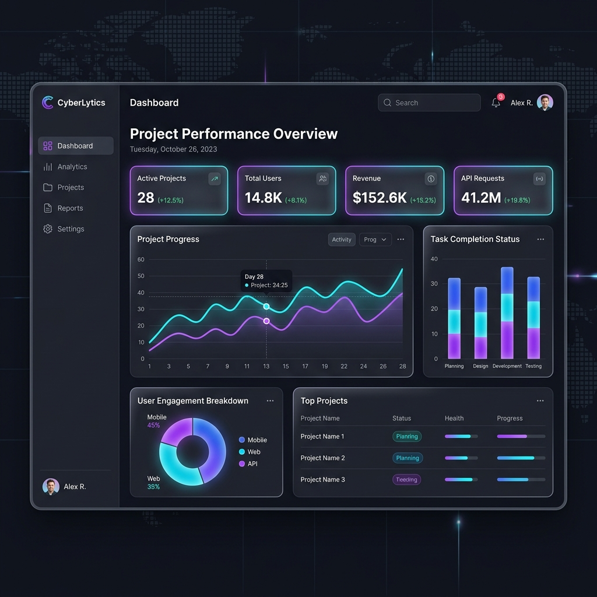

Bonjour, je suis
Ababacar Ousmane Niang
Stagiaire au SIMEN (Système Intégré de Management de l'Éducation Nationale) & Étudiant en dernière année de Master 2 RESI au Groupe ISI Dakar. Je conçois et déploie des architectures d'infrastructures résilientes, des solutions d'authentification souveraines (Keycloak SSO/IAM), des réseaux sécurisés et des environnements conteneurisés durcis.
CCNA Certifié
Cisco (1, 2, 3)
SIMEN & ISI
Systèmes & Réseaux
À Propos de Moi
Ingénierie des infrastructures, souveraineté numérique, administration systèmes et cybersécurité.
Administration Systèmes, Cloud, Sécurité & Réseaux
Actuellement en stage au SIMEN (Système Intégré de Management de l'Éducation Nationale) depuis septembre 2026 et en dernière année de Master 2 Réseaux et Systèmes Informatiques (RESI) à l'Institut Supérieur d'Informatique (ISI Dakar), je participe activement à l'administration, la supervision et la sécurisation des infrastructures systèmes et réseaux du secteur éducatif.
Je prépare parallèlement mon projet de mémoire de fin d'études axé sur la conception et l'implémentation d'une infrastructure d'authentification centralisée souveraine (SSO et Fédération d'Identités avec Keycloak). Titulaire d'une Licence en Informatique et Gestion (Ensup'Afrique), je combine une solide maîtrise des référentiels industriels (Cisco CCNA/CCNP, Huawei HCIP Datacenter) et une démarche d'automatisation rigoureuse (Docker, CI/CD, Terraform).
Projets d'Ingénierie
Accédez directement aux architectures, configurations réelles, topologies et codes sources documentés dans le référentiel.
Solution SSO Souveraine & Fédération d'Identités
Déploiement d'un cluster Keycloak 24+ souverain interconnecté à OpenLDAP et PostgreSQL. Standards SAML 2.0, OpenID Connect, chiffrement JWT RS256, authentification multifacteur (MFA) et RBAC/ABAC.

Ingénierie Réseaux Résilients Cisco & Huawei
Conception de cœurs de réseau résilients pour campus et datacenters : topologies OSPFv2 VLSM, redondance FHRP (HSRP/VRRP), agrégation LACP 2 Gbps, infrastructure multi-VLAN avec relais DHCP et VoIP avec QoS.
Cybersécurité, Filtrage & Durcissement L2/L3
Sécurisation en profondeur : neutralisation des attaques de commutation (Port-Security, DHCP Snooping, DAI, STP Guard), tunnel chiffré VPN IPsec Site-à-Site (AES-256 / SHA-256) et cloisonnement étanche DMZ.

DevOps & Architecture Conteneurisée Multi-Tiers
Conteneurisation durcie via multi-stage builds sous Alpine Linux et utilisateur non-root. Segmentation réseau bi-tiers (front Nginx et back isolé PostgreSQL/Redis) et pipeline CI/CD automatisé sous GitHub Actions.
Application Mobile Multiplateforme (Flutter & Dart)
Application mobile réactive conçue selon les spécifications Material Design 3. Gestion d'état dynamique via le patron Provider, gestionnaire de thèmes sombre/clair (themeProvider.dart) et code modulaire.
Infrastructure Virtualisée VMware vSphere HA
Conception d'une architecture vSphere en haute disponibilité (HA/DRS) avec hôtes ESXi, serveur de gestion vCenter, stockage centralisé partagé SAN/iSCSI, segmentation VLAN et tolérance aux pannes.
Domaines d'Expertise
Des compétences d'ingénierie concrètes pour auditer, concevoir, déployer et administrer des infrastructures critiques.
Administration Systèmes & Virtualisation
Administration avancée Linux (Ubuntu, Debian, RedHat) et Windows Server (AD DS, GPO, DNS, DHCP). Conception de clusters virtualisés sous VMware vSphere (ESXi/vCenter) et Proxmox VE.
Ingénierie Réseaux & Haute Disponibilité
Conception de cœurs de réseau campus et datacenters : routage dynamique OSPFv2/BGP, commutation L2/L3, redondance FHRP (HSRP/VRRP), agrégation EtherChannel et téléphonie IP avec QoS.
Fédération d'Identités, IAM & SSO Souverain
Déploiement et intégration de plateformes IAM souveraines avec Keycloak. Interconnexion OpenLDAP/Active Directory, mise en œuvre d'OpenID Connect, SAML 2.0, OAuth 2.0 et authentification MFA.
Cybersécurité, VPN IPsec & Filtrage
Défense en profondeur : durcissement des commutateurs d'accès (Port-Security, DHCP Snooping, DAI), tunnels chiffrés VPN IPsec site-à-site (AES-256), pare-feu Cisco ASA et cloisonnement DMZ.
Expérience & Formation
Un aperçu chronologique de mes diplômes, mes certifications Cisco et mon immersion professionnelle.
Stage en Administration Systèmes, Réseaux & Sécurité
Participation active à la gestion, la sécurisation et au maintien en condition opérationnelle (MCO) des infrastructures serveurs et réseaux du ministère de l'Éducation nationale. Déploiement d'environnements virtualisés, supervision des flux réseaux et support aux plateformes institutionnelles.
Master 2 RESI (Réseaux & Systèmes Informatiques)
Projet de Mémoire : Conception et implémentation d'une solution souveraine d'authentification unique (SSO) avec fédération des identités (Keycloak / SIMEN).
Spécialisations : DevOps & MultiCloud, Cisco CCNP ENCOR, HCIP Huawei Datacenter, Big Data, Edge Computing & ITIL.
Master 1 RESI (Réseaux & Systèmes Informatiques)
Administration système avancée Linux & Windows Server, sécurité des réseaux (durcissement L2, IPsec, DMZ), conteneurisation Docker, intelligence artificielle (HCIA) et gestion d'état Flutter.
Licence Professionnelle Informatique et Gestion
Formation académique complète en administration des systèmes, gestion et modélisation des bases de données relationnelles (SGBDR), réseaux informatiques et gouvernance des SI.
Dossier & Justificatifs
Consultez en ligne ou téléchargez mon CV, mes diplômes et mes certifications Cisco CCNA vérifiées.
CV complet mis à jour (Stagiaire au SIMEN | Master 2 RESI | Systèmes, Réseaux & Sécurité).
Diplôme officiel de Licence universitaire en Informatique et Gestion.
Fondamentaux des réseaux, modèles OSI et TCP/IP, adressage IPv4/IPv6 et configuration d'équipements Cisco.
Commutation Ethernet, VLANs, Trunking, EtherChannel, routage inter-VLAN et sécurité de couche 2.
Routage dynamique OSPFv2, concepts WAN, VPN IPsec, ACLs de sécurité, QoS et automatisation réseau.
Conception d'un cluster Proxmox VE, conteneurisation LXC, haute disponibilité et dimensionnement d'un datacenter virtualisé.
Mise en œuvre d'une architecture d'observabilité sous Debian Linux avec métrologie système, agents Node Exporter et tableaux de bord Grafana.
Guide d'implémentation de la solution d'ITSM GLPI (ITIL v3), synchronisation d'annuaire LDAP Windows Server AD DS et inventaire de parc automatisé.
Travaillons Ensemble
Vous avez un projet d'infrastructure, de sécurité réseau ou une opportunité professionnelle ? Contactez-moi directement.